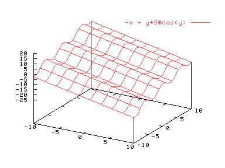

El comando para realizar gráficas tridimensionales es splot. Su forma más sencilla es la siguiente:
splot funcion
Por ejemplo, para representar -x+y+3*cos(y), deberíamos escribir
splot -x+y+3*cos(y)
Y obtendríamos lo siguiente:

Se puede cambiar la escala de forma similar a lo visto para plot
splot [x1:x2][y1:y2][z1:z2] funcion
splot [x1:x2] funcion
splot [][y1:y2] funcion
splot [][][z1:z2] funcion
Para modificar los rangos de las variables se pueden usar las opciones "set xrange [x1:x2]", "set yrange [y1:y2]", "set zrange [z1:z1]". Es importante recordar que si se modifica un rango para una gráfica, ese mismo rango se utilizará para todas las gráficas posteriores.
Si se desea volver a activar el autoescalado de gnuplot se puede hacer tecleando "set autoescale z".